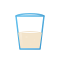

PilkOS
Starting Up
Sign in
PilkOS
Incorrect password. Please try again.
Back
-10° F
Log Out
Restart
Shutdown
No matching apps or files
New File
New Folder
Small Icons
✓
Medium Icons
✓
Large Icons
✓
Show Desktop Items
Lock Desktop Items
Freeform Mode
Quick Settings
Wi-Fi
Checking...
Bluetooth
Checking...
Screen Size
Auto
Battery
--
•
--
Airplane Mode
Off
Media Control
Capture
70%
Audio Devices
Output Device
Default Output Device
Speakers
Headphones
Input Device
Default Input Device
Microphone
Headset Mic
Wi-Fi Networks
Bluetooth Devices
Power Plans
Power Saving
Balanced
Performance
Screen Size
Auto (Fit Screen)
1024 x 768
1280 x 720
1366 x 768
1600 x 900
1920 x 1080
Weather Outlook
Weather
Today
--
--
Tomorrow
--
--
--
--
--
Month 2026
Sun
Mon
Tue
Wed
Thu
Fri
Sat